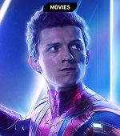
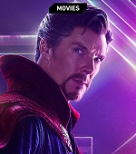
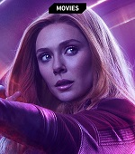
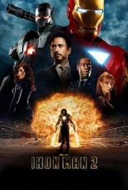
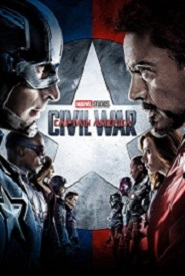

Iron Man is a fictional superhero appearing in American comic books published by Marvel Comics. The character was co-created by writer and editor Stan Lee, developed by scripter Larry Lieber, and designed by artists Don Heck and Jack Kirby. The character made his first appearance in Tales of Suspense #39 (cover dated March 1963), and received his own title in Iron Man #1 (May 1968).
Iron Man possesses powered armor that gives him superhuman strength and durability, flight, and an array of weapons. The armor is invented and worn by Stark (with occasional short-term exceptions). The weapons systems of the suit have changed over the years, but Iron Man's standard offensive weapons have always been the repulsor rays that are fired from the palms of his gauntlets. Other weapons built into various incarnations of the armor include: the uni-beam projector in its chest; pulse bolts (that pick up kinetic energy along the way; so the farther they travel, the harder they hit); an electromagnetic pulse generator; and a defensive energy shield that can be extended up to 360 degrees. Other capabilities include: generating ultra-freon (i.e., a freeze-beam); creating and manipulating magnetic fields; emitting sonic blasts; and projecting 3-dimensional holograms (to create decoys).
Powers and Abilities
- Wears modular arc reactor-powered Iron Man armor, granting superhuman strength & durability, the ability to fly & project Repulsor blasts
- Armor is also outfitted with complex tech, including a cutting-edge artificial intelligence, sophisticated sensor systems & other gadgetry
- Genius-level intellect, with particular aptitude in invention & engineering.
Allies

Captain America

War Machine
Nick Fury

Black Widow

Hulk
Thor

Vision

Spider Man

Doctor Strange
Falcon

Hawkeye

Wanda Maximoff
| NAME | Description | ABILITIES |
|---|---|---|
| Captain America | Captain America is the alter ego of Steve Rogers, a frail young artist enhanced to the peak of human perfection by an experimental "super-soldier serum". | Superhuman Agility,Stamina,Reflexes,Strength. |
| War Machine | "Variable Threat Response Battle Suit, Model XVI, Mark I", a more heavily armed version of the Iron Man armor designed for all-out warfare. | Supersonic flight Energy repulsor and variety of weapons. |
| Black Widow | Black Widow is a Russian agent trained as a spy, martial artist, and sniper, and outfitted with an arsenal of high-tech weaponry | Expert spy, tactician, and combatant and Expert marksman. |
| Hulk | The Hulk, a green-skinned, hulking and muscular humanoid possessing a vast degree of physical strength. | Incredible superhuman strength, durability, and healing factor. |
| Thor | Thor Odinson is the Asgardian God of Thunder, superhero, self-proclaimed protector of Earth and the king of Asgard. | Dimensional transportation. Electric,Weather manipulation. |
| Vision | He was originally intended to act as Ultron's "son" and tasked with destroying the superhero team the Avengers. Instead,he joined forces with the Avengers. | Superhuman intelligence, strength, speed,Density control. |
| Spider-Man | American teenager Peter Parker, is bitten by a radioactive spider.he gains superhuman powers. | Ability to cling to most surfaces. He is also extremely agile and has amazing reflexes. |
| Doctor Strange | Doctor Strange is described as "the mightiest magician in the cosmos" and "more powerful by far than any of your fellow humanoids" by Eternity. | Mastery of magic uses the Cloak of Levitation and the Eye of Agamotto. |
| Falcon | Falcon, Wilson uses mechanical wings to fly, and has limited telepathic and empathic control over birds. | Expert bird trainer Skilled combatant, martial artist, aerialist, and acrobat Flight |
| Hawkeye | He has been trained from childhood in the circus and by the criminals Trick Shot and Swordsman. | Master archer and marksman Expert tactician, acrobat and combatant Uses a variety of trick arrows As Goliath |
| Wanda Maximoff | Enhanced by the High Evolutionary at Mount Wundagore becoming a conduit of Chaos Magic allowing her to manipulate probability and warp reality itself | Telekinesis, energy manipulation, and neuroelectric interfacing that allows her to read thoughts. |
Enemies

Obadiah Stane
Ivan Vanko

Aldrich Killian
loki
Ultron

Thanos
Alter Ego: Anthony Edward ' Tony ' Stark
Tony Stark is an inventive genius whose expertise in the fields of mathematics, physics, chemistry, and computer science rivals that of Reed Richards, Hank Pym, and Bruce Banner, and his expertise in electrical engineering and mechanical engineering surpasses even theirs. He is regarded as one of the most intelligent characters in the Marvel Universe. He graduated with advanced degrees in physics and engineering at the age of 17 from Massachusetts Institute of Technology (MIT) and further developed his knowledge ranging from artificial intelligence to quantum mechanics as time progressed. His expertise extends to his ingenuity in dealing with difficult situations, such as difficult foes and deathtraps, in which he is capable of using available tools, including his suit, in unorthodox but effective ways.He is well respected in the business world, able to command people's attention when he speaks on economic matters, having over the years built up several multimillion-dollar companies from virtually nothing. He is noted for the loyalty he commands from and returns to those who work for him, as well as for his business ethics.In addition, Stark possesses great business and political acumen. On multiple occasions he reacquired control of his companies after losing them amid corporate takeovers.
Movies
Iron Man
(2008)

Iron Man 2
Iron Man 2
(2010)
The Avengers
(2012)
Iron Man 3
(2013)

Avengers: Age of Ultron
(2015)

Captain America: Civil War
Captain America: Civil War
(2016)

Spider-Man: Homecoming
(2017)

Avengers: Infinity War
(2018)